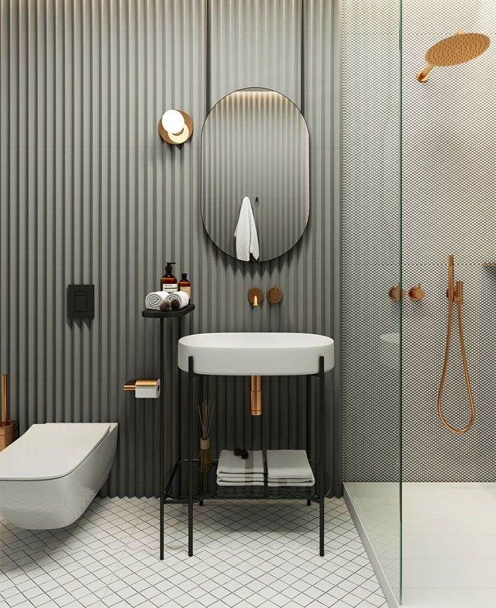

About Us
Our Plumbing
Plumbing is any system that conveys fluids for a wide range of applications. Plumbing uses pipes, valves, plumbing fixtures, tanks, and other apparatuses to convey fluids. Heating and cooling (HVAC), waste removal, and potable water delivery are among the most common uses for plumbing, but it is not limited to these applications. The word derives from the Latin for lead, plumbum, as the first effective pipes used in the Roman era were lead pipes.
In the developed world, plumbing infrastructure is critical to public health and sanitation.
Boilermakers and pipefitters are not plumbers although they work with piping as part of their trade and their work can include some plumbing. A water pipe is a pipe or tube, frequently made of plastic or metal,[a] that carries pressurized and treated fresh water to a building (as part of a municipal water system), as well as inside the building.Plumbing equipment includes devices often behind walls or in utility spaces which are not seen by the general public. It includes water meters, pumps, expansion tanks, back flow preventers, water filters, UV sterilization lights, water softeners, water heaters, heat exchangers, gauges, and control systems.
There are many tools a plumber needs to do a good plumbing job. While many simple plumbing tasks can be completed with a few common hand held tools, other more complex jobs require specialised tools, designed specifically to make the job easier.
Specialized plumbing tools include pipe wrenches, flaring pliers, pipe vise, pipe bending machine, pipe cutter, dies, and joining tools such as soldering torches and crimp tools. New tools have been developed to help plumbers fix problems more efficiently. For example, plumbers use video cameras for inspections of hidden leaks or other problems; they also use hydro jets, and high pressure hydraulic pumps connected to steel cables for trench-less sewer line replacement.
Flooding from excessive rain or clogged sewers may require specialized equipment, such as a heavy duty pumper truck designed to vacuum raw sewage.
The life of a plumber can usually be messy and a little stressful. Luckily, we have put together this awesome list of 61 clever plumbing quotes that will be sure to brighten your day! If you are a plumber or are close to one feel free to share this list of funny and clever plumbing quotes with them! We even threw in a few smart plumbing slogans, famous plumbing quotes, and a couple interesting plumbing facts at the end as a bonus! “We repair what your husband fixed”
“A good flush beats a full house”
“Don’t sleep with a drip, call your plumber”
“Were number 1 in the number 2 business”
“Professional, affordable and we always leave the seat down”
“Call us when you’re backed up”
“Got a leak, ill take a peak”
“All plumbers have big dreams, pipe dreams”
“We wont drain your check book”
“Our reputation has leaked out”
“If it weren’t for us, you’d have no place to go”
“If water runs through it, we do it”
“Call the best, flush the rest” ”If I had my life to live over again, I’d be a plumber”
“A plumber is an adventurer who traces leaky pipes to their source”
”Plumbing – that little thing between the Middle Ages and Modernity”
”If it wasn’t for plumbing, we would have still died from drinking water”
”Unlike doctors, plumbers are in the business of prevention”
”Man, an ingenious assembly of portable plumbing.
“My singing voice is somewhere between a drunken apology and a plumbing problem.”
“If I waited for inspiration every time I sat down to write a song I probably would be a plumber today. – Barry Mann
“People in West Virginia do have cars. We have indoor plumbing. We even use knives and forks.
“How does a plumber break the ice butt crack a joke?”
“Your crap is my family’s bread & butter.”
“Lets say I was a plumber, or worked at a factory, I would download music, you feel what I’m saying”
“People say they are always waiting for GOD to appear, but have you ever tried to find a plumber on a Sunday?”
Every actor is somewhat mad, or else he’d be a plumber”